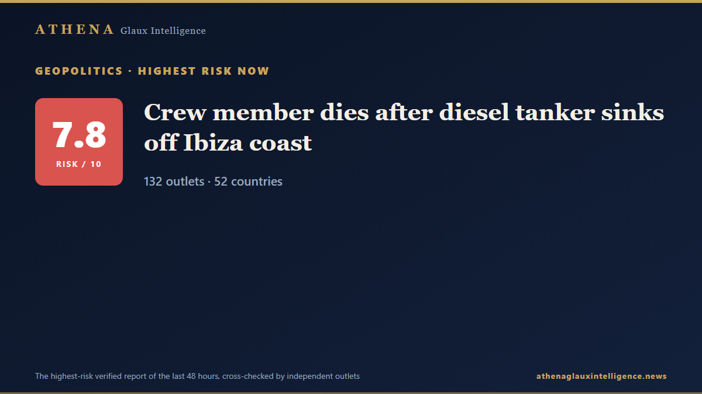
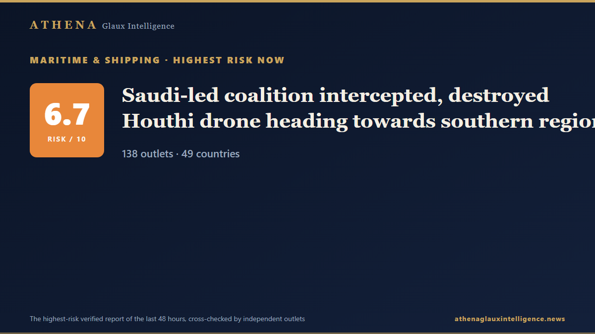
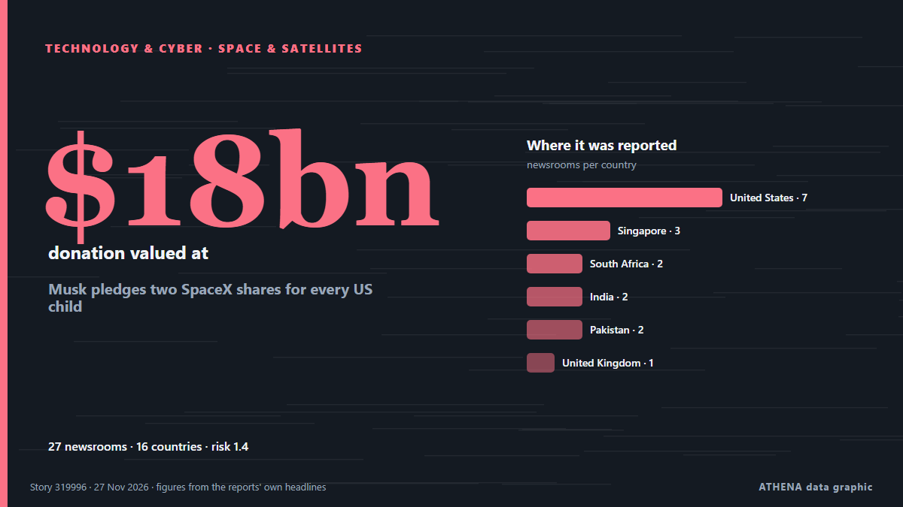

Risque 7.8Élevé
Géopolitique, économie et transport maritime — recoupés entre pays.
Géopolitique
Toute la géopolitique >Risque le plus élevé maintenant

Risque en hausseHausse au cours des dernières 24 heures
Maritime et transport
Bureau maritime >Risque le plus élevé maintenant
Risque 6.7Élevé
Saudi-led coalition intercepted, destroyed Houthi drone heading towards southern region
Voir les preuves ›
Liste de surveillanceDétroits, ports et autres reportages maritimes
- Strait of HormuzPerturbéattack / strike · risk 6.7 · 139 newsrooms (72 h)
- Kerch Strait / Black SeaPerturbéattack / strike · risk 7.8 · 135 newsrooms (72 h)
- SingaporePerturbéattack / strike · risk 6.7 · 139 newsrooms (72 h)
Chaque titre, vérifié dans plusieurs pays.
ATHENA Glaux suit 743 médias dans le monde. Une information devient un événement vérifié seulement lorsque des médias indépendants la rapportent. Chaque événement indique qui l'a publiée en premier et un score de risque avec ses raisons.
1 687événements en 24 h
743médias suivis
40minutes entre deux mises à jour
Séisme ou inondation près de chez vous cette semaine ?
Saisissez votre ville et voyez les séismes, inondations, tempêtes et alertes officielles à proximité, avec une liste du kit d'urgence 72 heures. Gratuit, sans inscription, et votre lieu reste sur votre appareil.
Des articles arrivent de médias indépendants : quand deux se rejoignent sur la même histoire, un événement vérifié naît.
Comment ATHENA vérifie une information
- CollecterLes reportages arrivent de médias indépendants dans de nombreux pays.
- CroiserQuand deux médias se rejoignent sur la même information, elle devient un événement vérifié.
- ExpliquerChaque événement montre qui était le premier, jusqu'où il s'est propagé et pourquoi le risque est ce qu'il est.
Perspectives mondiales des risques
Bilans hebdomadaires et mensuels : les événements les plus à risque, les tendances par domaine et par région, et ce qu'il faut surveiller.
Lire les perspectives ›Briefing quotidien
Les dix événements mondiaux les plus importants du jour, les risques en hausse et les nouveaux événements, chaque chiffre expliqué.
Ouvrir le briefing du jour ›
Technologie et cyberMusk pledges two SpaceX shares for every US child
Elon Musk plans to gift every child in the United States two SpaceX shares, as he attempts to build public support for his satellite and AI businesses during a period of intense pu... de Oman Observer
6.5Importance
1.8Risque · faible
89%Confiance
Les titres sont affichés en anglais, tels que publiés.
Commerce et industrie
Iran says 2 oil tankers hit naval mines, catch fire near Oman’s Khasab port
Iran’s Islamic Revolutionary Guard Corps (IRGC) Navy said on Thursday that two oil tankers hit naval mines and caught fire north of Oman’s Khasab port while attempting to “secretly” cross the Strait… de Middle East Monitor
Technologie et cyber
FIFA says it has been victim of a cyberattack accessing 'personal and business information'
FIFA was the victim of a cyberattack that saw hackers gain access to what soccer’s world governing body describes as a “limited set of personal and business information," it said Thursday. de CBC News
Sponsorisé
Cybernetics and Artificial Intelligence Lab Welcome to the Cybernetics and Artificial Intelligence Laboratory, established at the Department of Business Administration of the National and Kapodistrian University of Athens. The lab is headed by Professor Dimitrios Thomakos. The lab aims to do research that can be published in top venues. Our research uses tools and methods of Artificial Intelligence, and lies in the following areas: - Forecasting - Decision making - Cyber security - Finance We are always looking forward to collaborating with exceptional students!
En savoir plus – Cybernetics and Artificial Intelligence LabNavires dans les détroits du monde en ce moment
Comptages AIS en direct. Touchez ou survolez une barre pour le détail.
Derniers reportages
New Zealand's ruling coalition loses majority in final election count
Hung Parliament: Luxon needs Opportunity, no path to power for Labour
Ukraine has ‘no intention’ of spreading war to Libya, says minister
IAEA working with Russia, Ukraine on ceasefire to repair power link at Zaporizhzhia nuclear plant
Macron calls proposed $223B in cuts to EU’s long-term budget a ‘strategic mistake’
Guinea-Bissau’s military junta postpones elections until 2028, extending its rule by two years
SAP weighs cutting at least 10,000 positions in AI restructuring
Settlers smash foundations of Palestinian family's homes in West Bank
Technologie et cyber
Hackers target Taiwan's semiconductor supply chain, fishing and food sectors
Nine hacker groups are running 18 active campaigns against Taiwan as AI speeds up attacks, Cyfirma says. de DigiTimes Asia
Énergie et environnement
Macy’s Thanksgiving Day Parade 2026: Why It’s Been Postponed And When And Where To Watch
The 2026 Macy’s Thanksgiving Day Parade has been postponed until Saturday, November 28. de Forbes Business
Technologie et cyber
Five questions over Nvidia's China chip trail that Huang's return has not settled
For Nvidia shareholders, the main risk is regulatory rather than personal. de investingLive (ForexLive)
Géopolitique, politique et sécurité
Plus ݃lections et politique
France and Germany want deal by year-end to ‘Le Pen-proof’ next EU budget, Ukraine
BRUSSELS, Nov 26 (Reuters) - France and Germany want the European Union to reach a deal in the next month on its 2028-2034 budget and financing for Ukraine ahead of a slew of elections across the… de Daily Maverick
- Diplomatie et sommets
2 S. Korean naval submarines under repair after accidents
- Guerres et conflits
Ukraine says North Korea temporarily halted missile shipments to ally Russia
- Guerres et conflits
Ukraine claims strike that damaged Russian oil refinery
- Élections et politique
Armenia plans full withdrawal of Russian border guards in coming years, prime minister says
Économie, finance et marchés
Plus ›Banques et crédit
Lula picks banker Luiz Carlos Trabuco to run the Finance Ministry in his fourth term
BRASILIA, Nov 26 - Brazilian President Luiz Inacio Lula da Silva has approached Luiz Carlos Trabuco, chairman of bank Bradesco, about taking over the finance ministry, two people with knowledge of… de The Straits Times
- Inflation et taux d'intérêt
EUR/USD might be bottoming out amid peak Fed hawkishness and dovish repricing risks
- Banques et crédit
Argentina bans its central bank from printing money for the government
- Banques centrales et régulation
Cards overtake cash at eurozone points of sale – ECB report
- Banques et crédit
EU leaders divided over budget spending as they weigh a $49 billion loan to Ukraine
Commerce, industrie et infrastructures
Plus ›Transport maritime et ports
Global maritime trade set for zero growth in 2026
UN Trade and Development forecasts zero growth after 1.9% increase in 2025 as longer shipping routes drive up fuel costs and freight rates. de Anadolu Agency (English)
- Construction et infrastructures
Iran rapidly builds underground complex near nuclear sites – US institute
- Droits de douane et contrôles
US unveils tariffs on EU, China and others over ‘unfair’ trade
- Droits de douane et contrôles
EU rejects new US tariffs targeting industrial overcapacity
- Agriculture et sécurité alimentaire
Body of missing Bulgarian man found; employer confessed murder
Énergie, ressources et environnement
Plus ›Climat et politique climatique
Forum Chair backs Australia’s COP31 role as Albanese defends conference spending
Australian Prime Minister Anthony Albanese has defended the cost of hosting and participating in COP31, saying climate action is a matter of Australia's national interest, regional security and its… de Post-Courier (PNG)
- Météo extrême et catastrophes
Heavy rain, wind and flooding plague much of US on Thanksgiving holiday
- Pétrole et gaz
Worker killed, several others injured in attack on Saudi Arabia’s Jazan oil refinery
- Pétrole et gaz
Iraq PM sacks senior officials over oil smuggling scandal
- Pétrole et gaz
Diesel tanker carrying up to 7,000 tonnes sinks near Ibiza, killing one
Technologie, IA et cybersécurité
Plus ›Espace et satellites
Butter chicken in space: China prepares halal feast for Pakistan’s first astronaut
Menu features more than 100 varieties of food for Pakistani astronaut Zeeshan Ali, including beef nihari, lamb korma, curried chickpeas and butter chicken. de Anadolu Agency (English)
- Espace et satellites
U.S. approves SpaceX plan to deploy 1 million satellites for data centres in space
- Cybersécurité
Fifa confirms internal data stolen in cyber attack
- Médias et désinformation
French far-right leader Bardella faces fresh anti-Semitism accusations in media reports
- Puces et calcul
US finds no evidence China directed executive to spy on Nvidia CEO, WSJ reports
Entreprises et investissement
Plus ›Investissements
Mnangagwa in Kenya for inaugural Bi-National Commission as Nairobi, Harare seek to boost trade
NAIROBI, Kenya, Nov 27 – Zimbabwean President Emmerson Mnangagwa arrived in Nairobi on Thursday evening ahead of high-level talks with President William Ruto aimed at expanding trade and investment… de Capital FM Kenya
- Faillites et restructurations
Negeri Sembilan exco to be sworn in tomorrow
- Secteurs et risques
Christmas shopping season starts in Europe
- Faillites et restructurations
Nigeria: President Tinubu Felicitates ADC Presidential Candidate Atiku Abubakar At 80
- Fusions et acquisitions
US maker of Marlboro cigarettes mulls over bid for Imperial Brands
Accidents et urgences
Plus ›Accidents et urgences
Egypt detains a driver suspected of causing Cairo tanker crash that killed 31
Egyptian authorities have detained a driver suspected of causing a fuel tanker to overturn on a major highway in Cairo. de ABC News (International)
- Accidents et urgences
Tinubu approves houses, N100m each for families of NAF crash victims
- Accidents et urgences
2 workers injured in explosion, fire at Kerteh factory
- Accidents et urgences
One killed, five injured in BNP factional clash in Munshiganj
- Accidents et urgences
Ukrainian man in critical condition after setting himself on fire in central Warsaw
Trois façons de lire aujourd'hui
Commencez par celle qui convient à votre tempsÉvénements vérifiés
Classés selon l'ampleur de la couverture
- Trump’s Nvidia Shares Gained Up to $14.8M After Huang’s Return188 médias · 56 paysRisque 4.5
- Key Russian oil hub on fire after drone attack – video, photos121 médias · 48 paysRisque 6.2
- 2 Italians killed in Kuwait drone strike; Iran denies responsibility60 médias · 33 paysRisque 7.4
- Russian attacks on Kharkiv region kill four people and injure six in past 24 hours40 médias · 28 paysRisque 7.3
- Saudi-led coalition destroys 50 Iran-Backed Houthi military targets in Yemen45 médias · 25 paysRisque 7.4
Bureau d'évaluation
Posez une question et lisez une évaluation argumentée d'un sujet majeur, avec ce qui la démentirait.
Ouvrir le Bureau d'évaluation ›Aujourd'hui en chiffres
| 08:00 | 351 |
|---|---|
| 09:00 | 480 |
| 10:00 | 468 |
| 11:00 | 467 |
| 12:00 | 448 |
| 13:00 | 485 |
| 14:00 | 475 |
| 15:00 | 832 |
| 16:00 | 506 |
| 17:00 | 641 |
| 18:00 | 444 |
| 19:00 | 623 |
| 20:00 | 1609 |
| 21:00 | 1265 |
| 22:00 | 944 |
| 23:00 | 538 |
| 00:00 | 491 |
| 01:00 | 496 |
| 02:00 | 130 |
| 03:00 | 94 |
| 04:00 | 231 |
| 05:00 | 150 |
| 06:00 | 233 |
| 07:00 | 303 |
Risque des événements du jour
Géopolitique139Économie et marchés54Commerce et industrie46Entreprises34Énergie et environnement29Technologie et cyber29Maritime3
Signaux émergents
- Hausse soudaine · ActifVox
- Nouveau nom dans l'actualité · ActifIbiza
- Hausse soudaine · ActifRheinmetall
- Hausse soudaine · ActifUS East Coast
- Hausse soudaine · ActifPablo Hernandez de Cos
Alertes officielles
- M 6.5 - Vanuatu regionM6.5 · USGS ·
- M 5.9 - 238 km SW of Yanglong, ChinaM5.9 · PAGER yellow · USGS ·
Restez informé
ATHENA Weekly Risk Picture
Les plus grands risques géopolitiques, économiques et maritimes de la semaine, recoupés et notés.
Chaque vendredi à 8 h (heure d'Athènes) · gratuit · en anglais
S'abonner gratuitementATHENA sur Telegram
Les nouvelles dès leur publication : les événements urgents de risque 6 ou plus, un récapitulatif horaire, les mises à jour des suivis de risque et le briefing quotidien à 10 h.
Gratuit · publications en anglais · désinscription à tout moment
Rejoindre le canalL'inscription est gérée par beehiiv avec double confirmation : rien de ce que vous saisissez n'est envoyé à ATHENA, et chaque numéro contient un lien de désinscription.
Suivi des risques
Plus ›Détroit d'OrmuzRisque 5.312 nouveaux événements cette semaine · en baisse (20 la semaine précédente)Mer RougeRisque 7.416 nouveaux événements cette semaine · en baisse (44 la semaine précédente)Grèce et TurquieRisque 3.77 nouveaux événements cette semaine · stable par rapport à la semaine précédenteChypreRisque 3.814 nouveaux événements cette semaine · stable par rapport à la semaine précédenteSanctions contre la RussieRisque 5.315 nouveaux événements cette semaine · stable par rapport à la semaine précédenteGuerre en UkraineRisque 7.3226 nouveaux événements cette semaine · en baisse (271 la semaine précédente)Proche-Orient : Israël et GazaRisque 7.475 nouveaux événements cette semaine · en baisse (93 la semaine précédente)TaïwanRisque 4.612 nouveaux événements cette semaine · stable par rapport à la semaine précédentePétrole et gazRisque 4.232 nouveaux événements cette semaine · stable par rapport à la semaine précédenteCanal de SuezRisque 0.00 nouvel événement cette semaine · en baisse (3 la semaine précédente)Détroits turcsRisque 0.00 nouvel événement cette semaineCanal de PanamaRisque 0.01 nouvel événement cette semaine · en hausse (0 la semaine précédente)Flotte fantômeRisque 3.52 nouveaux événements cette semaine · en baisse (3 la semaine précédente)Navigation en mer NoireRisque 0.00 nouvel événement cette semaine · en baisse (5 la semaine précédente)Banques centrales et tauxRisque 4.247 nouveaux événements cette semaine · stable par rapport à la semaine précédenteÉconomie grecqueRisque 1.38 nouveaux événements cette semaine · stable par rapport à la semaine précédenteÉnergie en Méditerranée orientaleRisque 0.03 nouveaux événements cette semaine · stable par rapport à la semaine précédenteBalkansRisque 4.914 nouveaux événements cette semaine · en baisse (25 la semaine précédente)Migration en MéditerranéeRisque 1.21 nouvel événement cette semaine · en baisse (3 la semaine précédente)
Risques mondiaux — semaine 48, 2026 (23–29 nov.) ›
Dans le monde
Amérique du NordTrump’s Nvidia Shares Gained Up to $14.8M After Huang’s Return
56 événements
EuropeMPs to be given first vote on Andy Burnham’s new EU deal next month
56 événements
Moyen-Orient et Afrique du NordSaudi Arabia Stresses Human Responsibility in AI Use
55 événements
Asie du Sud-EstTrump says trade deal reached between the U.S. and the Philippines
53 événements
Asie du SudTrump insists Nvidia CEO not a security threat
52 événements
Afrique subsaharienneMusk pledges two SpaceX shares for every US child
42 événements
Russie et EurasieRussian attacks on Kharkiv region kill four people and injure six in past 24 hours
40 événements
Asie de l'Est2 S. Korean naval submarines under repair after accidents
40 événements
OcéanieForum Chair backs Australia’s COP31 role as Albanese defends conference spending
35 événements
Amérique latine et CaraïbesHuawei found guilty in trade secrets theft case
28 événements